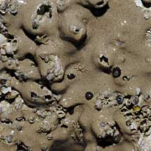
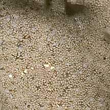
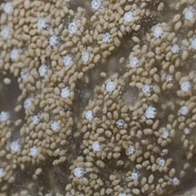
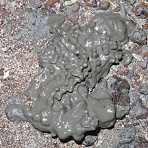
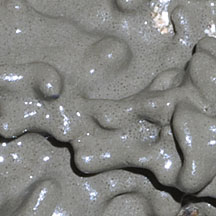
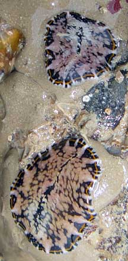

|
|
| ascidians text index | photo index |
| Phylum Chordata | Subphylum Tunicata/Urochordata | Class Ascidiacea |
| Beige
sheet ascidians Didemnum psammatodes* Family Didemnidae updated Nov 2019 Where seen? These thin beige sheets are often seen on our Northern shores, and sometimes on our Southern shores. Features: Colony irregular in outline, about 5-10cm in diameter, found near the mid-water mark, encrusting vertical and horizontal hard surfaces including artificial structures. Also under stones. The colony is smooth, rubbery with many, tightly packed tiny spots. Usually beige in colour. In Serina Lee's article, photos of Didemnum psammatodes closely resemble these animals, including a close up of "fecal pellets and oral siphons marked with rings of spicules on the surface of colony". According to other descriptions, the colour of Didemnum psammatodes comes from the dense packing of fecal pellets throughout the colony. What eats them? Various kinds of flatworms (Order Polycladida) are sometimes seen on the sheets, possibly eating them. |
 East Coast, Jun 09 |
 East Coast, Jun 09 |
 Changi, Aug 12 |
|
 Beting Bronok, Jun 10  |
 These flatworms were seen on Beige sheet ascidians growing beneath a stone. Tanah Merah, Dec 10 |

*Species are difficult to positively identify without examination of internal parts.
On this website, they are grouped by external features for convenience of display.
| Beige sheet ascidians on Singapore shores |
On wildsingapore
flickr
|
Links
References
|